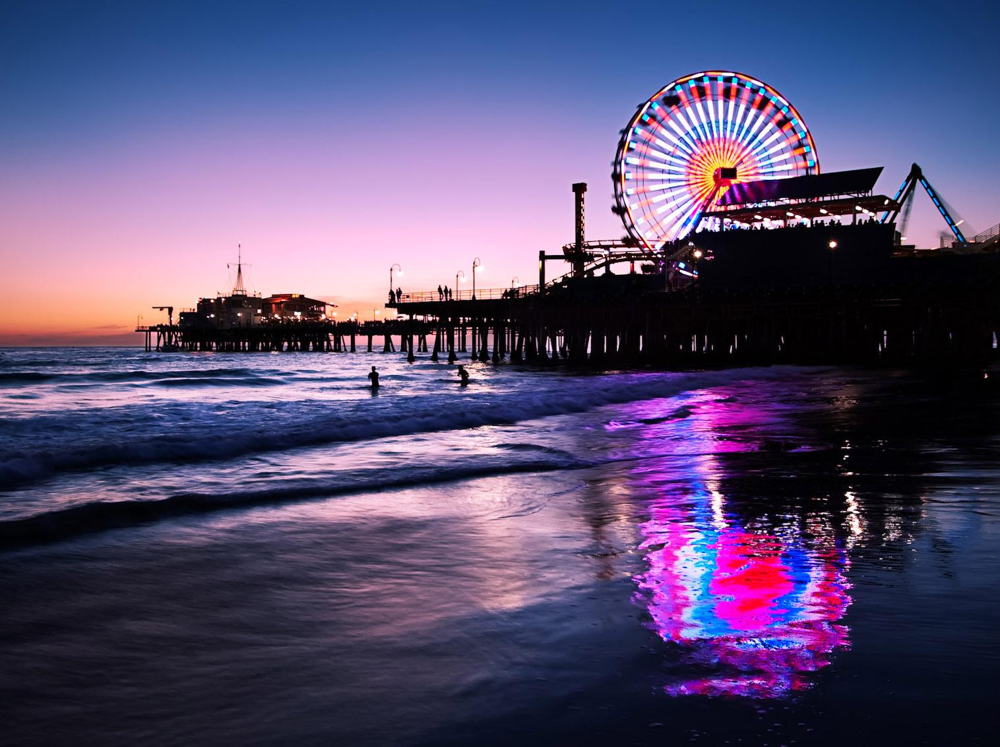

Ulises Macias Estrada
Ulises Macias Estrada soy un estudiante que actualmente está estudiando en la UTL en la carrera de DSM. Ulises nació el 17 de julio del 2003 en León GTO, cuenta con dos hermanos mayores, Juvenal Macias Estrada de 24 anños y Luis Angel Macias Estrada de 22 años. Sus padres son Marta Patricia Estrada Ortiz quien nació el 21 de junio de 1973 en León GTO y su padre es Juvenal Macias Carbajal quien nació el 8 de agosto de 1975 en León GTO. Desde que era niño, siempre fui un tanto rebelde ya que nunca me estaba quieto, siempre hacia maldades, me portaba mal y muchas otras cosas, conforme fui creciendo madure y deje de ser así, en la secundaria fui un poco más tímido ya que me costaba mucho poder comunicarme con los demás y debido a eso me costó mucho hacer amigos, además de que tampoco sacaba buenas calificaciones. Para cuando llegue a la prepa decidí que ya no sería tímido, así que comencé a intentar hablar más y de esa forma comencé a hacer más amigos de una forma muy fácil, además comencé a poner atención en clases, también estudiaba para los exámenes y de esa forma conseguí sacar buenas calificaciones en la prepa. Para cuando llegue a la universidad madure un poco más y decidí volverme más responsable tanto en lo académico como en mi casa. Actualmente sigo estudiando en la universidad y estoy sacando buenas calificaciones y más que nada realmente me está gustando mucho la carrera en la que estoy y aprendo muchas cosas que se me hacen muy interesantes.
Mis pasatiempos son jugar fútbol, ver videos de YouTube, ver series o películas ya sea solo o con mi familia, salir a algún lado con mi familia o con algunos amigos, jugar videojuegos y escuchar música. Todas estas actividades son parte de lo que me gusta hacer cuando tengo tiempo libre y son lo que uso para poder distraerme un poco y así no estar siempre pensando en otros problemas o en la escuela.
El Puerto de Santa Monica es un lugar que realmente me gustaría poder visitar ya que se me hace un lugar bastante hermoso y agradable.
La Torre Eiffel realmente nunca me ha interesado debido a que no se me hace una gran atracción turística y no es un lugar al que me gustaría ir de visita.